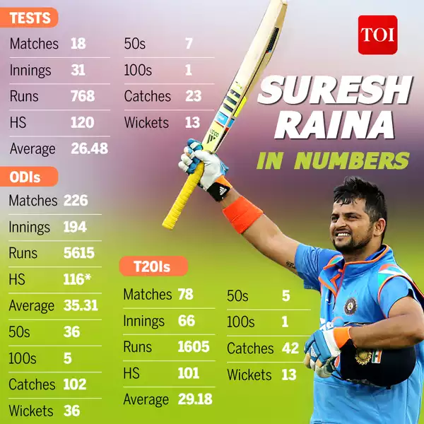
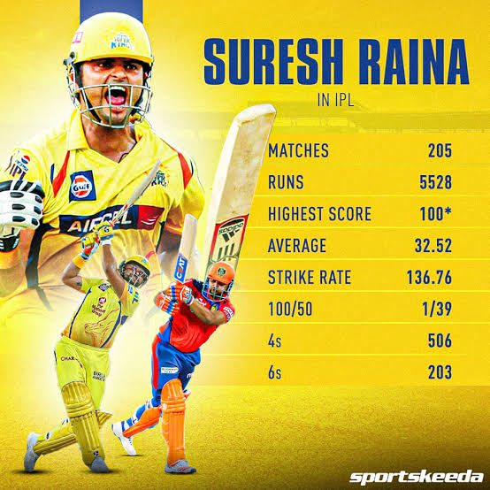
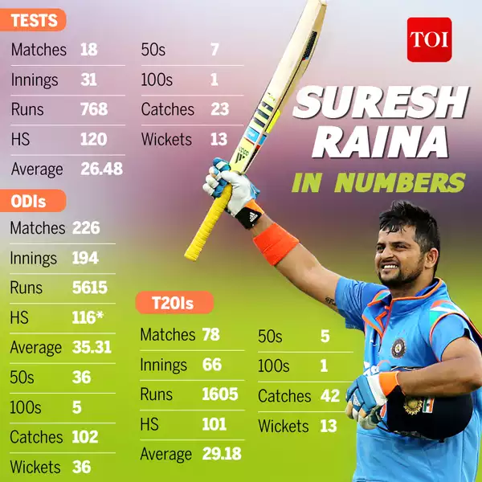
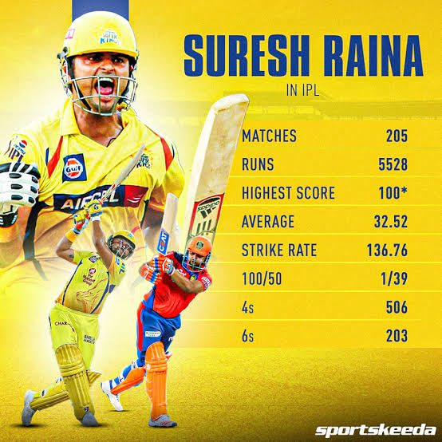

THE MAN, THE MYTH, THE LEGEND
SURESH RAINA !
Raina is one of my favourite batsman in cricket and I won't be lying if I say started watching cricket only for the sheer love of his game. I maybe only exceptional person in this Whistle Podu army who loves Chinna Thala more than Thala.
ABOUT RAINA
Suresh Raina, a former Indian cricketer, is celebrated for his explosive batting, exceptional fielding, and reliability in limited-overs cricket. Born on November 27, 1986, he was a left-handed middle-order batsman and a key part of India’s squad, particularly in the 2011 ICC World Cup, where India emerged victorious. Raina also excelled in the IPL, primarily with the Chennai Super Kings, becoming one of the league’s top run-scorers and a fan favorite. Known for his positive energy and consistency, he was the first Indian to score a century in T20 internationals. Raina retired from international cricket in August 2020, leaving behind a legacy of dynamism and dedication.
 



TATA IPL 2024 Schedule: The much-awaited Tata Indian Premier League (IPL) 2024 will begin on Friday, March 22, 2024. Traditionally, BCCI starts the IPL season every year on the last Friday of March. This time, Tata IPL 2024 will kick off on Good Friday, March 22, 2024, with the grand finale taking place on Sunday, May 26, 2024.